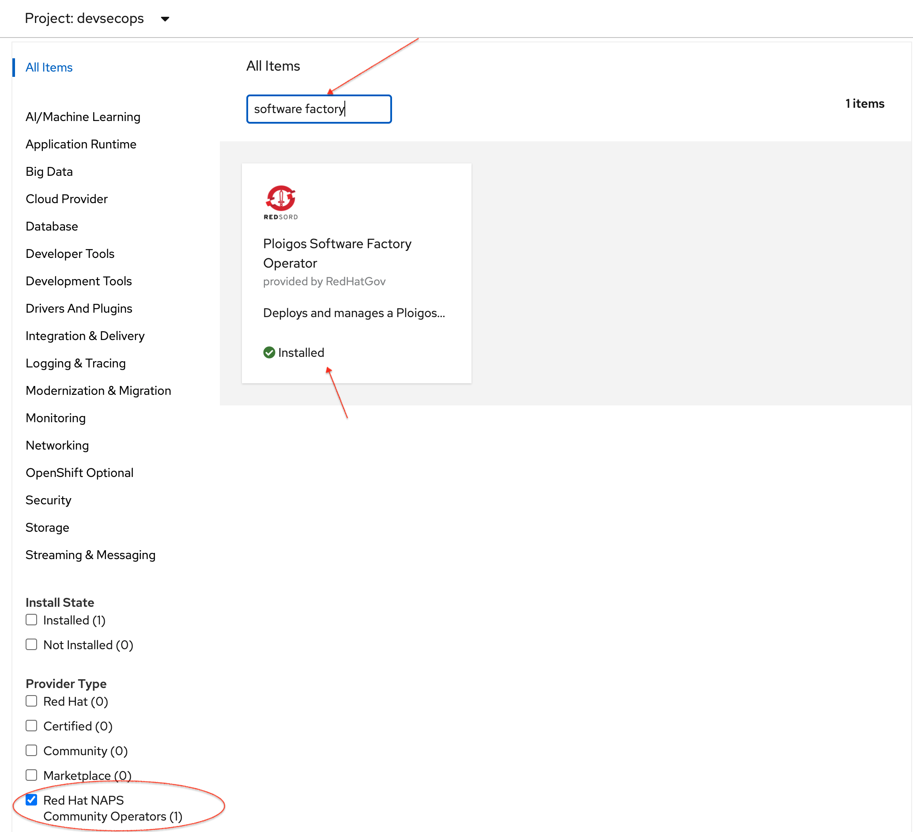
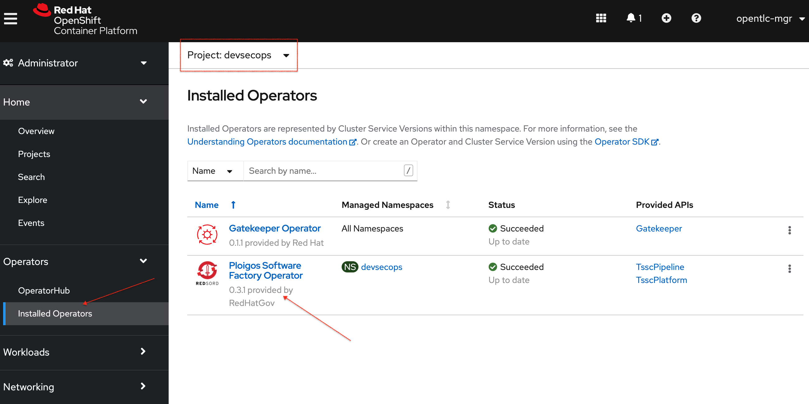
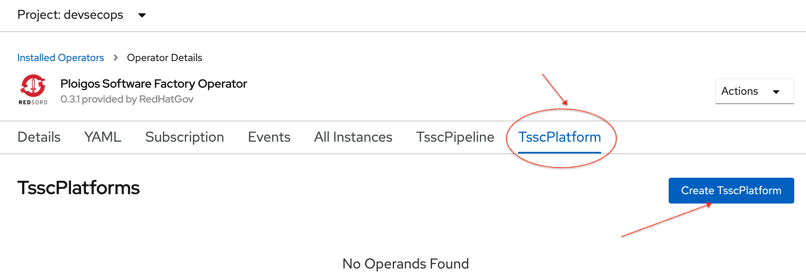
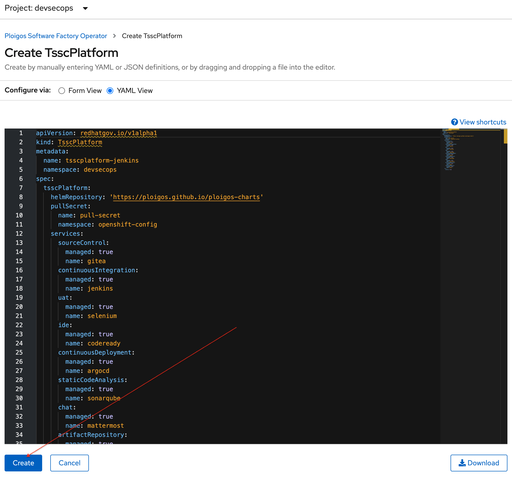
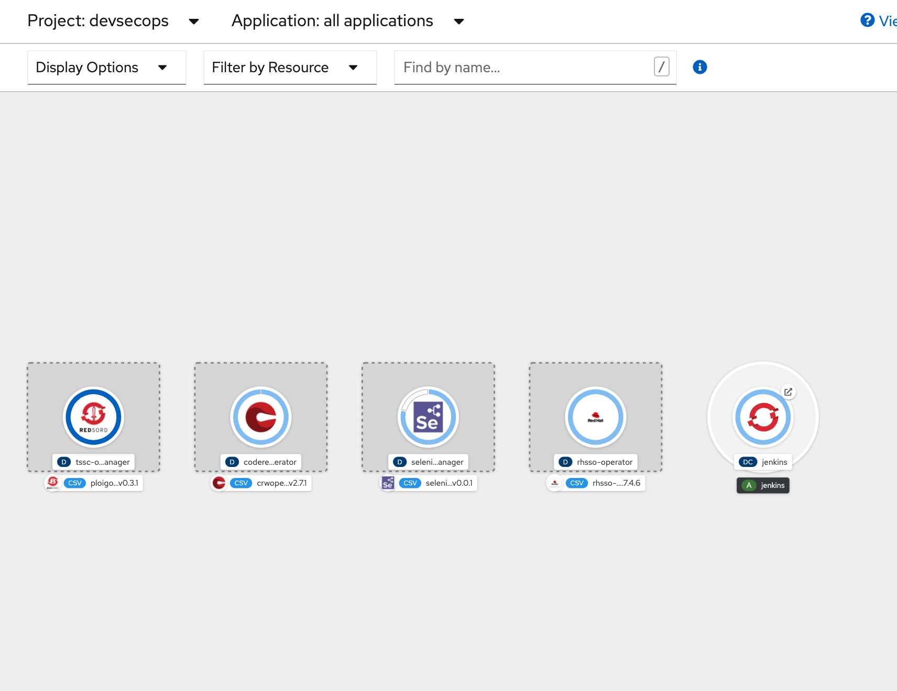
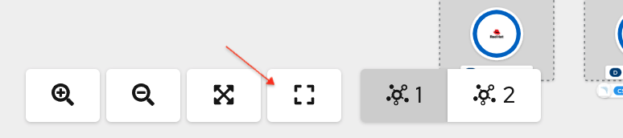
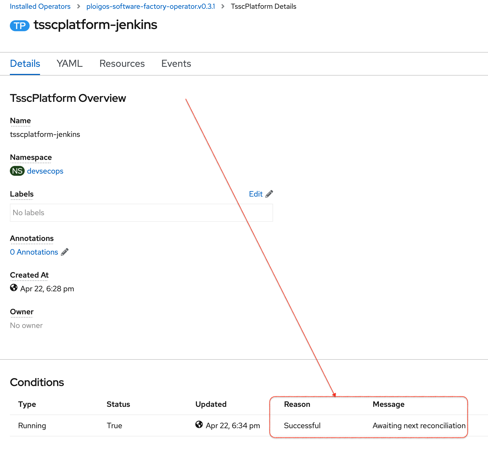
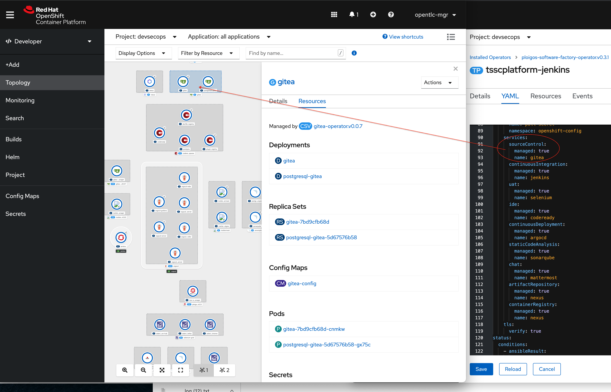

Secure Software Factory Demo
Secure Software Factory Platform
-
Log into the OpenShift platform with a cluster admin and open two tabs (or windows):
-
Switch to the
devsecopsproject and click on OperatorHub -
Scroll down to provider type and check
Red Hat NAPS Community Operators. Typesoftware factoryto attract focus on the Ploigos operator-
Explain that OpenShift allows administers to subscribe to different channels (even their own trusted internal channels) for available operators
-
This represents Red Hat consulting’s catalog of trusted operators

-
-
Next let’s take a look at the (pre) installed Software Factory Operator in more detail. Click on the
Installed Operatorsbutton in the left navbar. Click on the Ploigos Software Factory Operator -
Scroll through the Operator Details page and double check that the operator is successfully installed.
-
Point out the two different CustomResources that the operator watches for, namely the
TsscPipelineandTsscPlatformCRs. -
Select the
TsscPlatformCR to create the platform for our secure software factory. Click theCreate TsscPlatformbutton -
Switch to the YAML view and briefly show the different configuration options for the platform and then click
Create -
As soon as you hit create, switch to the second tab/window Developer Perspective (Topology View)
-
Zoom out to show the operator doing its work to create the items in the platform. Here’s what it looks like in the middle of its run:
 -
Wait for the platform to be built out
Determining when the platform is completedYou can determine when the operator has completed successfully by running the following command in a hidden terminal:
(cd ${DEMO_HOME}/ansible; ansible localhost -m include_role -a name=ploigos_support -e ploigos_wait=true -e ploigos_install=false)If it completes successfully you should see something like this:
localhost | SUCCESS => { "msg": "Platform has been successfully installed" } -
When the platform has finished, refit the Topology View if you haven’t already and zoom out to survey the different aspects of the platform
 -
When the platform has finished, return to the operator Admin Perspective and show that the platform has indicated successful installation
 -
OPTIONAL: Click into the yaml view of the admin perspective and compare it to the topology view as indicated below:
